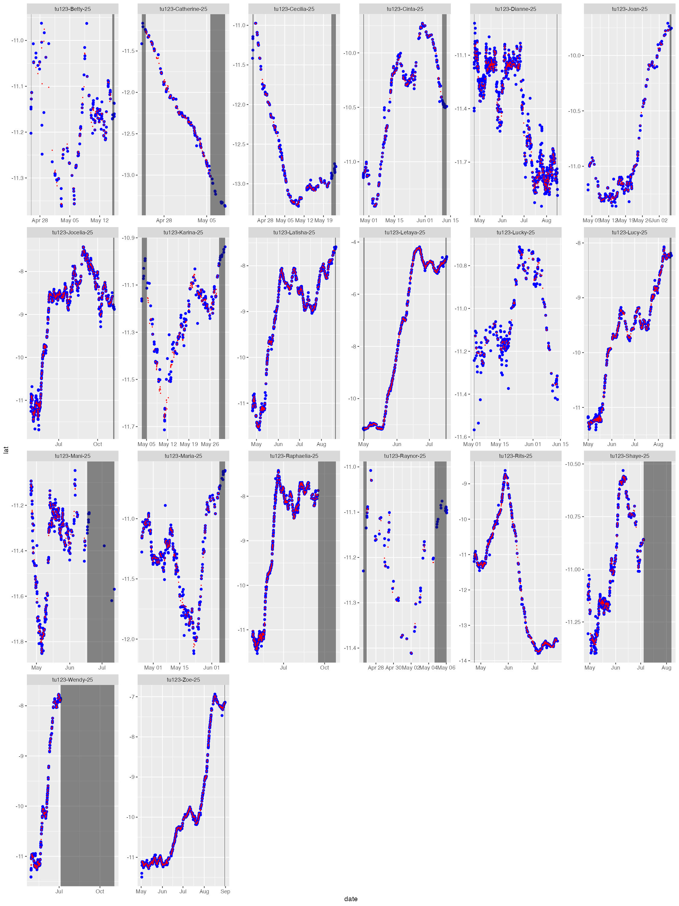
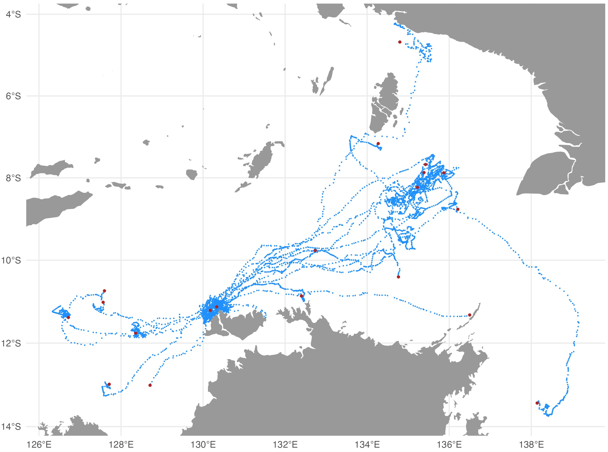

The first step to initiate any ArgosQC workflow is to
construct a JSON config file (see SMRU_config_file).
In this example, the main QC outputs were written to .CSV files in
the specified output directory, output.dir. Each .CSV file
includes the name of the SMRU data table, when present
(ctd, diag, dive,
haulout, summary) or the QC file
(metadata, ssmoutputs). For QC workflows with
ATN data, each of these file names is appended with the species’
AnimalAphiaID and the ADRProjectID. For IMOS
and other programs, the file names are appended with the SMRU campaign
ID (e.g., ct182).
The diag files show the SSM fit (red) overlaid on the tag-measured
Argos &/or GPS locations (blue). The dark grey vertical bars denote
the time period tags were actively recording locations but the seal(s)
either had not yet gone to sea (no recorded diving activity - left
side), or the CTD sensor had failed (e.g., grey bar on right side of
tu123-Catherine-25). By default, the QC model does not fit
to data in these time periods. These plots help judge whether the SSM
fits have artefacts that need addressing - typically only addressed
during a delayed-mode QC workflow. 
The map file shows the SSM-predicted tracks (blue) and current last estimated location (red) for each deployed tag. The map files are annotated by the QC date so they are not overwritten by successive QC runs. 
The QC’s main outputs, the .CSV files contain all records from the
original SMRU data tables and are appended with the following additional
columns: ssm_lat, ssm_lon, ssm_x,
ssm_y, ssm_x_se, ssm_y_se. These
are the QC’d locations and their uncertainty estimates interpolated to
the time of each record. The ssm_x, ssm_y
variables are the coordinates from the QC workflow projection (in km)
and ssm_x_se, ssm_y_se are the associated
standard errors (in km). Note that NA’s may be present in the
QC-appended location variables, particularly at the start and/or end of
individual tracks. This is typically indicative of track portions prior
to animals going to sea (at deployment start) and portions when either
the CTD or pressure sensor failed, eg. due to biofouling or seawater
ingress, but tag still transmitted locations (near deployment end).
If an input deployment/tag metadata file is provided then the output metadata file contains all the original metadata records plus the following variables describing the QC workflow applied to the data:
qc_start_date - the track datetime (UTC) at which the
QC workflow was started.qc_end_date - the track datetime (UTC) at which the QC
workflow was ended.qc_proj4string - the projection used for QC’ing the
locations, as a proj4string.qc_method - denotes the ArgosQC R package
was used.qc_version - denotes the version number of the
ArgosQC R package used.qc_run_date - the datetime (UTC) when the QC was
applied to the data.Note, these variables are not appended to the metadata for IMOS QC workflows due to IMOS - AODN metadata specifications.
The SSMOutputs file contains the SSM-predicted locations at the
time.step specified prediction interval. The time of the
first location is set to the time of the first tag-measured location
passed to the model. This may or may not be the first tag-measured
location in the tag datafile, depending on whether the animal-borne tag
was immediately at sea. The location coordinates are provided as:
lon, lat, x, y, and
location uncertainty as x_se, y_se. The planar
coordinates and uncertainty estimates always have units in km. Their
coordinate projection is provided in the metadata .CSV file
(qc_proj4string).